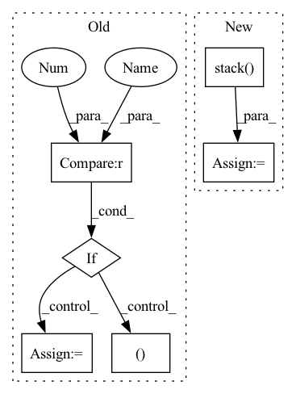

Pattern ID :9041
Before Change
// collapse dimensions to BSx512 (resnet o/p)
x = x.view(x.size(0), -1)
// Unsqueeze for sequence length
if t == 0 :
gru_output, h_n = self.rnn(x.unsqueeze(1))
else:
gru_output, h_n = self.rnn(x.unsqueeze(1), h_n)
// output dim: BSx1 and Squeeze sequence length after completing GRU stepAfter Change
// // hr = hr * 25.0
hr_per_clip.append(hr.flatten())
output_seq = torch.stack( hr_per_clip, dim=0) .permute(1,0)
// return output_seq, gru_output.squeeze(0), fc_out
return output_seq, output_seq.squeeze(0)[:6]
In pattern: SUPERPATTERN
Frequency: 3
Non-data size: 6
Instances Fragment ID: 32932688
Project Name: anweshcr7/rhythmnet
Commit Name: 0f9fc9b96933c04f723fbfa5b80cdf1a398828c3
Time: 2021-03-14
Author: anwesh.marwade@beyondsports.nl
File Name: src/models/rhythmNet.py
M Class Name: RhythmNet
N Class Name: RhythmNet
M Method Name: forward(3)
N Method Name: forward(3)
M Parent Class: nn.Module
N Parent Class: nn.Module
M File Name: src/models/rhythmNet.py
N File Name: src/models/rhythmNet.py
M Start Line: 33
M End Line: 56
N Start Line: 33
N End Line: 64
Before Change
input4 = torch.cat((input4, x.unsqueeze(1)), dim=1)
comm = torch.mean(input4, axis=1)
for i in range(self.agents):
x = input4[:, i]
x = self.fc3[i](torch.cat((x, comm), axis=-1))
if i == 0 :
output = x.unsqueeze(1)
else:
output = torch.cat((output, x.unsqueeze(1) ), dim=1)
return output.cpu()
After Change
x = input2[:, i]
x = self.fc1[i](torch.cat((x, comm), axis=-1))
input3.append(x)
input3 = torch.stack( input3, dim=1)
input3 = self.prelu4(input3)
comm = torch.mean(input3, axis=1)
input4 = [] Fragment ID: 32932686
Project Name: gml16/rl-medical
Commit Name: a7aa4702050819ab83f9ad27fcfad2cfada3f306
Time: 2020-05-15
Author: g.m.leroy@outlook.com
File Name: examples/LandmarkDetection/DQN/DQNModel.py
M Class Name: CommNet
N Class Name: CommNet
M Method Name: forward(2)
N Method Name: forward(2)
M Parent Class: nn.Module
N Parent Class: nn.Module
M File Name: examples/LandmarkDetection/DQN/DQNModel.py
N File Name: examples/LandmarkDetection/DQN/DQNModel.py
M Start Line: 256
M End Line: 308
N Start Line: 255
N End Line: 298
Before Change
p = decay ** p
cov = []
true_features = []
for view_p, sparsity in zip(view_features, view_sparsity):
// Covariance Bit
if structure == "identity":
cov_ = np.eye(view_p)
elif structure == "gaussian":
cov_ = _generate_gaussian_cov(view_p, sigma)
elif structure == "toeplitz":
cov_ = _generate_toeplitz_cov(view_p, sigma)
elif structure == "random":
cov_ = _generate_random_cov(view_p)
elif structure == "simple":
cov_ = generate_simple_data(n, view_features, view_sparsity)
weights = np.random.rand(view_p, k)
for _ in range(k):
if sparsity > 0 :
if sparsity < 1:
sparsity = np.ceil(sparsity * view_p).astype("int")
// first = np.random.randint(N - sparse_variables_1)
// up[:first, _] = 0
// up[(first + sparse_variables_1):, _] = 0
mask = np.concatenate(([0] * sparsity, [1] * (view_p - sparsity))).astype(bool)
np.random.shuffle(mask)
weights[mask, _ ] = 0
weights = _decorrelate_dims(weights, cov_)
weights /= np.sqrt(np.diag((weights.T @ cov_ @ weights)))After Change
weights = np.random.rand(view_p, k)
if sparsity < 1:
sparsity = np.ceil(sparsity * view_p).astype("int")
mask = np.stack( (np.concatenate(([0] * sparsity, [1] * (view_p - sparsity))).astype(bool),) * k,
axis=0) .T
np.random.shuffle(mask.flat)
while np.sum(np.unique(mask, axis=1, return_counts=True)[1] > 1) > 0 or np.sum(
np.sum(mask, axis=0) == 0) > 0:
np.random.shuffle(mask.flat)
weights = weights * mask
weights = _decorrelate_dims(weights, cov_)
if np.sum(np.diag((weights.T @ cov_ @ weights)) == 0) > 0:
print() Fragment ID: 32932680
Project Name: jameschapman19/cca_zoo
Commit Name: fcbea373cbd6a237b62fdf365a4c7a09e46701ef
Time: 2021-05-06
Author: james.chapman.19@ucl.ac.uk
File Name: cca_zoo/data.py
M Class Name: AnonimousClass
N Class Name: AnonimousClass
M Method Name: generate_covariance_data(8)
N Method Name: generate_covariance_data(8)
M Parent Class:
N Parent Class:
M File Name: cca_zoo/data.py
N File Name: cca_zoo/data.py
M Start Line: 43
M End Line: 68
N Start Line: 35
N End Line: 71